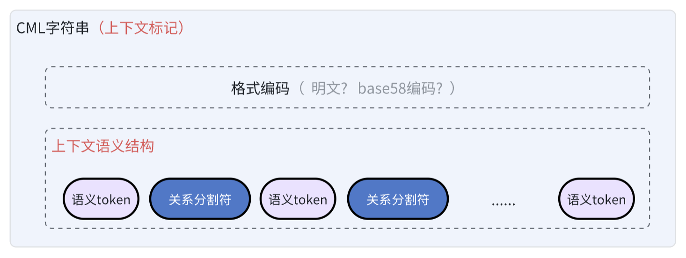
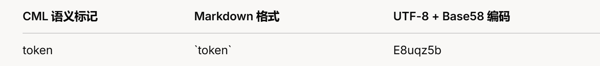

CML
Context Mark Language（简称CML），面向AI时代的上下文标记需要，提供符合自然语义的全新标记架构。
Context Mark Language标记语法的核心特征，是用单字符串表示多维度、可组合、隐含上下文关系的语义性标记结构，提供更简单的编写、嵌入、传输、存储、运算体验。
论文
CML阐释了Context Structure Expression模型。论文详见：
- 语义架构
- 语义结构
- 编码规则
- 最小完备性
Context Mark Language能极简的表达语义化的上下文结构。
用于标记知识上下文的CML字符串，是由一系列的语义Token+关系分割符两个语义基元类型构成。
- 语义Token，是CML描述上下文语义的基本单位，可以是任意形式的文本片段，对应LLM领域的Token概念，但不是词法性的，而是承载了自然语义的抽象维度。
- 关系分隔符（
:、.、@、+、空格）用于表达这些语义Token之间的上下文结构关系的语义，隐式声明加权分配的优先级。
在语义基元自由组合的基础上，进行编码，就构成了最终的CML字符串
表达规则
CML采用线性结构来描述语义关系（易于嵌入）。
假设我们用 <semantic_token> 来表示语义Token，<separator> 来表示关系分隔符。那么，规则大致可以这样定义：
- 每个 语义Token（
<semantic_token>）必须通过有且只有一个 关系分隔符（<separator>）相互连接。 - 语义Token和关系分隔符总是交替出现，
<semantic_token><separator><semantic_token><separator>......<semantic_token>。
CML围绕Token的优先级表达、结构可扩展、逻辑可正交三个核心需求维度，抽象出的具有高度表达力与组合力的5个语义结构基元，作为构建一切逻辑语义关系的基础单位。
这5种结构基元，分基本结构和复合结构、组合结构三大类，基本结构描述多个基元语义Token之间的简单结构关系，同时可作为复合结构的组成单元，而组合结构是更宏观的容器类型，可以连接任意语义Token、基本结构和复合结构。
a、补充关系
基本结构。右边语义对象对左边语义对象的补充说明或解释、限制，通常是语义附加，不改变原语义结构
f:A∋B∋C以符号@来表达，越靠左优先级越高，表示权重应该更高。
比如
name@identity@organizationname@company@position
两组标记的权重优先级声明是不同的，都重点都是先强调姓名。
b、线性递进关系
基本结构。一种有序的、逐步推进的语义关系，可以表达各种带方向的轨迹：递进、流向、变换链、指向链、顺序、因果、类型细化、生命周期......
f:A→B→C用符号.表达，左侧权重是否应该略高于右侧，需要LLM可以结合实际语义token来最终判断权重优先级。
比如
生物.动物.人，重点落在人这个子类上。产品设计.开发.运营，结合语义token本身，可以很清楚的判定他描述了一个生命周期语义。
c、并列集合关系
基本结构。多个语义并列，类似集合、对象属性集、多分支描述，无优先级或顺序，可以互调位置。
f:{A, B, C}用符号+表达，权重不分主次先后。
比如
男人+女人，相对人这个概念，正反组合都一样。姓名+年龄+username，都是某个账号的注册信息。
d、映射关系
一种语义结构到另一种语义结构的复合对照，k-v形式，两边都可以使用3种基本关系的自由组合，用于支持二维语义表达
f(A,B) ↦ f(C,D,E)用符号:表示。类似于键值对，但构造更自由，无论是key还是value部分，都可以使用基本结构，而不仅仅是基元语义token。
<key-context-struct>:<value-context-struct>比如下面都是合法的映射语义结构
网站:doc-war.com网站@doc-war.com:文档战场@贡献判断力价值AI+LLM:ChatGPT+Claude@v3.7ask.answer:请介绍CML语言?.CML语言是符合自然语义的语义结构语言
特别约束
CML不支持嵌套映射，避免带来语义结构本身的解析复杂度。比如用户:张三:删除+查询之类的表达，在格式上是非法的。
e、组合关系
多个语义结构组合形成新的语义整体，而不损失其原语义，反之拆分亦然，本质上是一种可运算的“关系结构容器”。
f(A)+f(B) =f(A+B)
f(A) =f(A+B) - f(B)
用空格表示对任意两个结构的语义叠加。
由于空格的语义优先级最低，且左右顺序无优先级影响，他同时也是CML字符串的整体运算符，对明文格式的两个CML字符串使用空格自然拼接成一个新的CML字符串，仍然是一个合法的CML字符串，不影响原语义表达。
plaintext(A)+space+plaintext(B) = plaintext(A+space+B)这种可自由拆分—>还原的无损还原特征，让CML字符串具备语义运算特征，而不仅仅是语义表达，为标记工作分工协同提供了坚实基础。
特别约束
由于空格承担了语义上的无损运算职责，比如如果 用户:张三怎么样之类的用法，虽然在格式上是合法的，但一定会破坏无损组合原则，当多个语义字符串被拆分重组之后，会因为位置不同而颠覆原有语义。
运算优先级
关系运算类似于编程语言的表达式解析：从左往右进行词法扫描，然后根据关系分割符的优先级，决定语义运算顺序。
CML定义了明确的优先级，以确保在标记、推理阶段对语义解释的一致性。
补充关系a > 线性递进关系b > 并列集合关系c > 映射关系d > 组合关系e在语义表达的基础上，定义了2种标准的CML字符串模式。核心区别是，在什么阶段，用什么形式，来标记语义Token（semantic_token）本身。

自然语言格式
自然语言格式，面向文档工程师的明文编写体验，适用于人类可读场景。
以markdown语法[15]中的反引号标记（inline code），来包裹语义Token（semantic_token）。文档工程师，可以使用所见即所得的markdown编辑器，作为语义结构的明文编辑环境，可以非常快捷、直观。
比如，用markdown编写明文字符串：
`token1`.`token2`@`token3`+`token4` `token5`:`token6`可实时渲染成下面的自然语义效果，一目了然：
token1.token2@token3+token4 token5:token6
编码格式
带反引号`的CML字符串，包括分割符号，在某些特殊场景下，可能会带来偏离预期的解析边界和转义要求。
因此，面向嵌入、存储、解析、运算场景，CML定义了更安全一致的编码输出格式。
示例
`token1`.`token2`@`token3`+`token4` `token5`:`token6`将以上明文CML字符串按如下顺序编码：
- 从CML字符串原文中顺序提取
语义Token和关系分隔符 - 先将每一个语义Token原文（不包括反引号的token字符串），使用UTF-8编码成字节流，再对字节流进行Base58编码[16]，生成Base58字符串
token1 → 编码 → zyvFCwFv
token2 → 编码 → zyvFCwFw
token3 → 编码 → zyvFCwFx
token4 → 编码 → zyvFCwFy
token5 → 编码 → zyvFCwFz
token6 → 编码 → zyvFCwG1
- 再用关系分隔符原文重新拼接（这个过程的本质是用base58代替反引号的包裹作用）
zyvFCwFv.zyvFCwFw@zyvFCwFx+zyvFCwFy zyvFCwFz:zyvFCwG1- 最后，再次用UTF-8+Base58进行整体编码，消除一切特殊字符
3EkzyE8r5SqnU6KSbLS98LVLJxFoNvskzaazkuEEryWminqaGwJz13YoatvfoRWoDyrofwUCQ换行和多空格问题
在自然编辑中，尤其是长上下文标记场景下，从可读性角度，人类可能倾向于对长字符串进行换行分割，而不是坚持使用空格来分割。因此，CML编辑器应该支持符号等价兼容，在明文格式的解析和存储时，将\n、\r\n、\r等各种可能的换行符号，自动改成空格符号。
同理，人类编写场景中，在同一行中，可能希望连续敲击多个空格，以提升结构拆分的直观性，CML编辑器也应该支持等价兼容。
在进行base58编码前，应该明确消除换行符和多余的空格，统一换成单空格符号。
五种关系分隔符，源自对自然语言的语义表达结构的抽象提炼，亦是对表达歧义与结构可控性问题的深入思考。
自然语言参考
CML定义的5种关系分隔符，参考的是自然语言中隐含的最基本的语义结构（修饰、顺承、并列、对照、组合）。这五种语义结构，与中英法日等具体自然语言的语法表达风格无关。
自然语言示例：
例子: 那个戴着帽子C 的高个子B男人C (A←B←C)
例子: 他起床A，穿衣服B，出门C (A→B→C)
例子: 我喜欢苹果A, 香蕉B, 橙子C {A，B，C}
例子: ChatGPTA和ClaudeB、DeepSeekC 都是 AID，也叫LLME (A+B+C ↦ D+E)
例子: 这朵花A + 很美B = 这朵花很美A+B (A+B=AB)
理论上，借助这5种基元关系的组合，能表达绝大部分逻辑关系，具有相当的完备性。
Token内部语义
对于排除、量词区间、映射嵌套等逻辑关系，CML不做原生支持，下沉至Token 层，来配合补充关系进行灵活表达，避免结构污染，带来优先级运算和人类直观阅读的复杂度。
因为Token本身也可以表达结构。
自然语言例子: “他的年龄大约18~25岁，一定不是中国人。”
标记:
❌ `age`:`range`:`18-25` （非法嵌套且毫无必要，完全可以往前或往后合并）
❌ `age`:`>18`+`<25` （没必要拆这么细）
✅ `age`:`range:18-25` （在Token内部嵌套是符合自然语义的）
✅ `age`:`18-25`
这体现了结构的极简原则：
CSE范式并不试图预先显式解决一切结构语义上的歧义，而是在实际表达时，借助关系分隔符所连接的语义Token，作为关系语义的上下文，让LLM推理出最合理的语义关系和对应的权重优先级。
显式结构的核心价值
主张善用Token内部的语义结构表达，也反映了CML在显式编码上的核心价值。
CML之所以接近于自然语言，而不等于纯自然语言，除了用于声明重要语义，还有其表达上的必要性。相比自然语言推理在token切分上的完全不可控，显式分割的本质，是进行语义纵向层级和横向关系的拆分，进而消除关系歧义，最终提升可控性与可解释性。